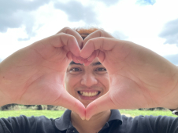

About Me
Hi there! I am Khoa Pham, a full stack developer in HCMC.

Over ten years of development experience and three years of leading and supporting all stages of the web development life cycle, including architectural design, analysis, development, implementation, and production support. Strong knowledge of Software Development Life Cycle (SDLC) methodologies Interacting with corporate customers for the purpose of providing solutions Diversified industrial application background in news, data management, e-commerce, and more.
In the past few years, I was lucky to have opportunity to work with many talented people to finish projects for clients like: Transportme, Creditorwatch, Konnect, Adidas, McDonald, and others.
If you have challenging projects that need with, don't hesitate to contact me.
Education
The Degree of Engineer in Information Technology at Da Nang University of Technology (2006–2011)
Professional Experience
- Research new technologies and introduce them to my colleagues.
- Watch over technical development and IT projects so that they fit in with the overall plans and goals of the company.
- Ensure the efficiency, effectiveness, and viability of all development teams and technical processes.
- Research, analyze, make suggestions, and choose technical ways to solve hard and challenging problems with development and integration.
- Work to "best practice" standards.
- Support clients and colleagues.
- Build microservices systems.
Technology Skills
- Have experiences in Cloud Computing such as Amazon Web Service.
- Have experience in News, Data Management and E-commerce domains.
- Highly skilled in architecting solution designs for complex organizational issues.
- Well experienced in application use-case modeling and designing analysis, realization, design, development.
- Hands on experience on RESTful web service design and development.
- Having experience in designing and deploying the software development life-cycle with Continuous Integration and Continuous Delivery (CI/CD).
- Have passion and strong methodologies to research new technologies.
- Over 4 years of experience in leading teams in agile project environments and scrum processes.
- Good analytical thinking logic, problem resolving, good working attitude, adaption, and ability to learn quickly.
Here is few blockquotes:
To a great mind, nothing is little.
A ship in port is safe, but that's not what ships are built for.
Page design by Khoa Pham